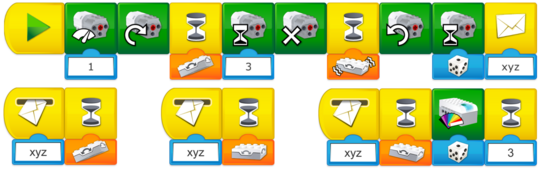

Utilisez cette tâche pour évaluer si vos élèves ont appliqué ce qu’ils ont appris lors de la tâche précédente.
Aide pour la programmation
Utiliser le programme existant pour créer une phase supplémentaire
L’aiguille de l’alarme peut déjà pointer sur trois couleurs différentes : vert, jaune et rouge. Une quatrième phase, la phase orange, peut être créée dans le programme existant. Quand l’aiguille pointe sur le rouge, le programme peut sélectionner une couleur aléatoire qui peut être comprise de la manière suivante :
-
Si l’orange est sélectionné, il s’agit de la phase orange
-
Si le rouge est sélectionné, il s’agit de la phase rouge
-
Si d’autres couleurs sont sélectionnées, il s’agit d’une erreur dans le système

Opportunités pour approfondir l’apprentissage et la collaboration
Voici deux façons différentes de conduire cette phase du projet :
-
Demandez aux élèves de tenir des statistiques relatives aux différentes phases d’activité du volcan, et utilisez ces informations pour calculer diverses valeurs, telles que le pourcentage, la moyenne ou la probabilité d’occurrence.
-
Demandez aux équipes de créer de nouvelles règles sur la manière dont le drone, l’astromobile et l’animal doivent se comporter en fonction des différentes phases du volcan. Regroupez les équipes pour qu’elles puissent échanger les règles et explorer les volcans.